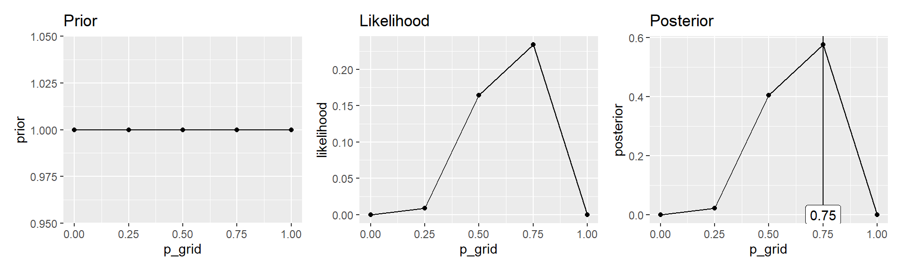
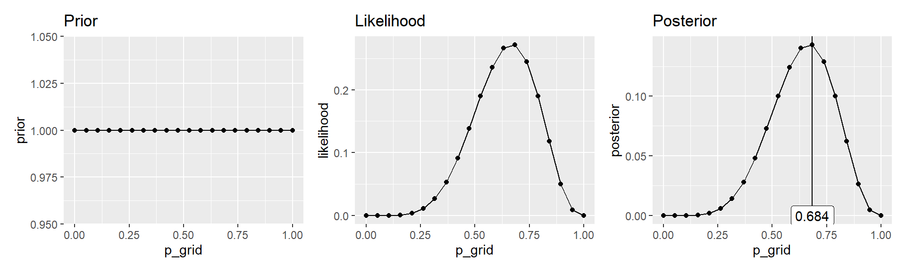
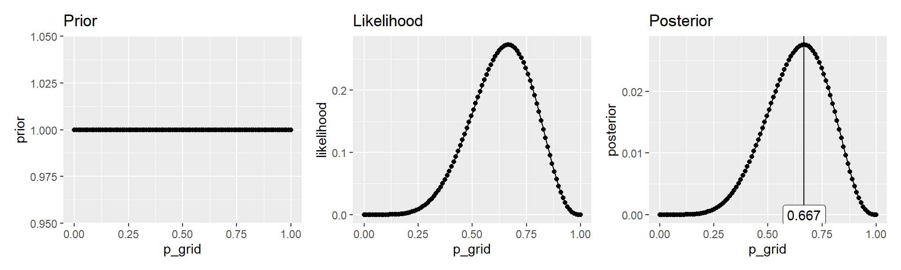
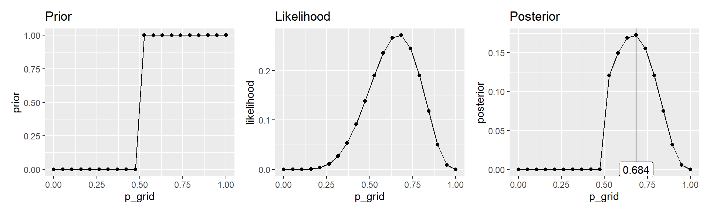
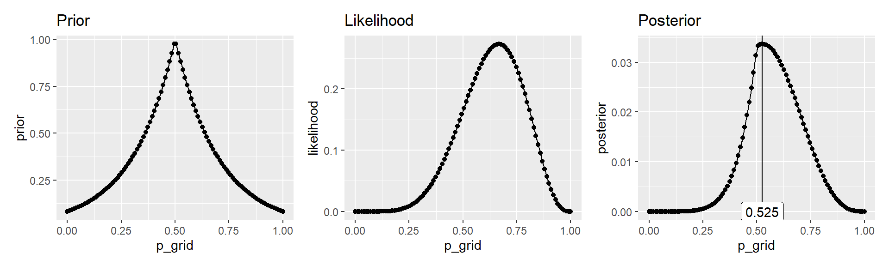

library(tidyverse)
library(glue)
library(patchwork)
library(rethinking)Let’s define some functions so it will be easier to experiment without a lot of copy/paste
Note that the default prior is uninformed
grid_approx <- function(nGrid, nTrials, nWins, priorFn = function(x) { 1 }) {
r <- tibble(
# the grid defining the parameters that will be tried
p_grid = seq(from=0, to=1, length.out=nGrid),
prior = priorFn(p_grid),
# the likelihood of get nWins "wins" (ie the data) from nTrials using each of the parameters in p_grid
likelihood = dbinom(nWins, size=nTrials, prob=p_grid),
# the posterior before normalizing
unstd.posterior = likelihood * prior,
# and after normalization
posterior = unstd.posterior / sum(unstd.posterior)
)
return(r)
}plot_grid <- function(df) {
opt <- df$p_grid[which.max(df$posterior)]
p1 <- ggplot(df) +
geom_line(aes(x=p_grid, y=prior)) +
geom_point(aes(x=p_grid, y=prior)) +
ggtitle("Prior")
p2 <- ggplot(df) +
geom_line(aes(x=p_grid, y=likelihood)) +
geom_point(aes(x=p_grid, y=likelihood)) +
ggtitle("Likelihood")
p3 <- ggplot(df) +
geom_line(aes(x=p_grid, y=posterior)) +
geom_point(aes(x=p_grid, y=posterior)) +
geom_vline(xintercept = opt) +
geom_label(label=glue("{format(opt, digits=3)}"), x=opt, y=0) +
ggtitle("Posterior")
# use patchwork to combine the plot
p1 + p2 + p3
} First, let’s do it the way the book does it
df <- grid_approx(nGrid=5, nTrials=9, nWins=6)
plot_grid(df)
df <- grid_approx(nGrid=20, nTrials=9, nWins=6)
plot_grid(df)
df <- grid_approx(nGrid=100, nTrials=9, nWins=6)
plot_grid(df)
priorFn <- function(p) { ifelse(p < 0.5,0,1) }
df <- grid_approx(nGrid=20, nTrials=9, nWins=6, priorFn)
plot_grid(df)
priorFn <- function(p) { exp(-5*abs(p - 0.5)) }
df <- grid_approx(nGrid=100, nTrials=9, nWins=6, priorFn)
plot_grid(df)